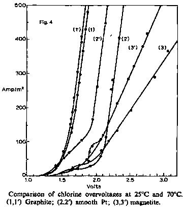

Vetter 167 has pointed out that graphite is essentially a passive electrode. Possible corrosion reactions, whose reversible potentials are much lower than the chlorine reversible potential, must be strongly inhibited for graphite to be able to function as an anode in chlor-alkali cells 162. However, as mentioned previously, some anode consumption does occur, approximately 3 kg/tonne of chlorine in diaphragm cells and 2 kg/tonne in mercury cells 162, and much research has been carried out to determine the corrosion mechanism 161 163-165 168-183, the effect of electrolysis variables 161 165 172 174 184-189; and possible ways of reducing the consumption 170 173 178 185 200-203.
The presence of carbon dioxide and, to a lesser extent, carbon monoxide in the anode gases in chlorine
production, indicated that some form of chemical attack of the graphite anodes was occurring. In addition
a graphite sludge formed showing that anode attack was not entirely chemical but also mechanical. The
presence of oxygen in the anode gases suggested that "active" oxygen was the corroding species, a
generally accepted view 161 163 169 171 176 183. However there may be some contribution from highly
oxidising products, e.g., hypochlorous acid 161 164 174 183 186 204. The nature of the graphite anodes
is the important factor in mechanical wear. Graphite anodes are porous disperse bodies which consist
of interconnecting carbon crystals, 70-80 % of whose volume consists of solid material, the remaining
volume consisting of pores 161. It is this pore structure which plays a significant part in the
mechanical consumption of the anodes 161 169 176 205. Chemical attack within the pores weakens
the intercrystalline bonds causing graphite particles to spall off.
The mechanism of anode consumption is not simple due to the porous nature of the graphite, and it is
easier to consider external and internal attack separately, internal attack being that occurring in
the graphite pores and resulting chiefly in mechanical consumption.
Vaaler 174 suggests that external attack of graphite anodes occurs by rapid adsorption of oxygen
followed by a conversion to chemisorbed oxygen, which is then rapidly desorbed, breaking a carbon bond, to give
carbon monoxide. Carbon monoxide is then mostly oxidised to carbon dioxide by dissolved oxygen or
chlorine. Bulygin 176 decided, as previous workers had 179 184 189 that to investigate the corrosion
of graphite it was essential to work in an electrolyte in which the only anodic product would be oxygen.
From this approach he deduced a similar corrosion mechanism to Vaaler. He also showed that external
attack could result in crumbling of graphite via a "swelling" mechanism, first observed by Sirak 184,
and Thiele 179. However this phenomenon has only been observed in strong oxidising acids and not under
conditions typical for chlorine production.
Internal attack of the graphite was attributed, by Sproesser 205 to hydroxyl ion discharge resulting from
the depletion of the chloride ion by internal electrolysis. Stender 163 showed however, that electrolyte
circulates continuously through the pores of a working graphite anode and therefore chloride ion
impoverishment does not occur. The internal attack was explained by virtue of the lower potential
within the pores favouring oxygen evolution. In view of the lower potential within the pores loffe
181 has pointed out that internal oxidation should be less intense (lower C.D.). According to Ksenzhek 206,
only 2% of the C.D. is involved in internal electrolysis. Bulygin 176 investigated further the C.D. within
the pores of a graphite anode and found that electrolysis within the pores could not cause any significant
destruction of the anode. In agreement with an earlier postulate 175 186 he showed that the attack was
chiefly due to the chemical action of hypochlorous acid within the pores. Kokoulina and Krishtalik 169
have recently confirmed Bulygin's work.
In the production of chlorine, anode consumption is to some extent dependent on cell operating variables. Among the variables that have been investigated are feed brine concentration, cell operating temperature, anode current density, brine feed rate 165 pH, 171 174 207 and sulphate concentration 163 187 190-196 207 208. In studying the effects of operating variables difficulties are encountered in reproducing commercial conditions in the laboratory. To some extent these difficulties have been overcome. Johnson 165 used a laboratory scale type of diaphragm cell to investigate the effects of feed brine concentration, temperature, anode C.D. and brine feed rate. It was found that temperature increase resulted in an increase in anodic attack of the order of 1.15 g/1000Ah/10° rise above 50°C. The variation of anode consumption with increasing C.D. was found to be a slight decrease in terms of quantity of current carried, but almost a linear increase with time. Even a small lowering of the sodium chloride content of the feed brine, from saturation, resulted in a significant increase in the rate of anode attack, which then rose rapidly as the brine concentration further decreased. At constant temperature and C.D., brine feed rate was found to be of major importance for controlling anode corrosion, zero corrosion being indicated for infinite rate of flow. These determinations took no account of pH variations within the anolyte 171, however, a factor that has subsequently been shown to be of great significance 171 174 207. Filippov et al. 188 189 studied anode wear under constant pH conditions by maintaining a fast flowing electrolyte. However mechanical wear was not taken into account and, in view of the short nature of the experiments, it is doubtful whether steady state conditions were achieved. Krishtalik et al 171 using a double diaphragm cell, with neutralisation of any migrating alkali within the diaphragms, successfully controlled anolyte pH and investigated its effect on anode wear in a low pH range. They showed that anode wear, in a solution containing 300 g/1 of sodium chloride at 80°C with a C.D. of 800 A/m2, was independent of acidity above approximately 0.01 N. At lower acidities the wear increased with fall in acid concentration, slowly at first ,but then more rapidly. In the pH range 3.0-4.2, Vaaler 174 has shown, by analysis of the anode gases, that anode consumption is doubled at the higher pH. More recently Wallen and Wranglen 207 have developed a technique for studying graphite anode corrosion over a wide pH range and have also investigated the effect of chloride concentration. The results obtained are not typical of those used in commercial chlorine production but show that maximum corrosion is obtained at intermediate pH's. These workers also used their technique to study the effect of sulphate ion on anode corrosion 207. It was found that at low chloride concentrations the effect of sulphate was very small, but in solutions of high chloride concentration the effect was very pronounced, anode wear being more than doubled with an addition of 40 g/1 of sodium sulphate.
Owing to work by Murray and Kircher 190, Gardiner 191, and Jacopetti 187, the detrimental effects of sulphate ion in brine electrolysis have been known for some time. Work by Krishtalik et al 192 has shown that graphite anode corrosion shows a roughly linear increase with increasing sulphate content. Flisskii et al 193-195 have attributed the corrosion increase to the specific adsorption of the sulphate ion, resulting in weakening of the carbon bonds in the lattice and culminating in the discharge of CO and CO2. Japanese workers 208 have found that in saturated brine sulphate has no effect in concentrations less than 3 g/1. The effect of chlorate ion on the corrosion of graphite anodes seems to be much smaller than that of sulphate 192. Fukunaga et al 209 claim a reduction in anode losses in diaphragm cells of 20% by incorporating 100 mg/1 of cobalt in the brine.
In addition to the effects of operating variables on anode consumption, work has also been carried out to determine the effects of anode characteristics, such as pore structure, degree of graphitisation, etc., on anode life. Foerster 185 observed that artificial graphite electrodes were broken down much less than charcoal electrodes under the same conditions, a result confirmed by Arndt and Fehse 200. The increase of stability with graphitisation is attributed to crystal growth, which also results in increased conductivity 161.
Flisskii et al 201 203 have recently investigated the relationships between anode stability and electrode structure. Recent work on the surface area of graphite anodes indicates that the specific surface of graphite is of the order 1 meter squared per gram 210. Flisskii 203 obtained similar data for fresh anodes but, after several months use in chlorine electrolysis, the surface area increased approximately tenfold. However no connection between surface area and stability of the anodes was found. This was explained by the fact that the specific surface of graphite is determined primarily by the number of micropores, and only a small proportion of the total surface corresponds to the macropores, and evidently micropores do not play any significant part in brine electrolysis 203. Marek and Heinz 211 have, however, found increased corrosion with increasing surface area. Studies of the relationship between anode stability and pore volume 201 203 indicate that the pores having radii within the range 7,500-75,000 A are the ones susceptible to attack, whilst the greatest number of the pores are concentrated in the radius range up to 7,500 A. Kuch-inskii et al 201 showed a 30% corrosion increase for a pore volume increase of 0.032-0.089 cm3/g for pores in the diameter range 2,500-70,000 A.
Bulygin 178 has studied the density distribution in the surface layer of a graphite anode at high and low C.D.'s. At high C.D. the electrolysis process was found to occur in only a small number of large pores resulting, after a time (4 hours in Buly-gin's case) in abrupt crumbling of the surface layer. At low C.D.'s however, the anodic destruction was of a surface character. Bulygin suggested that in this case electrolysis took place in the finest of the pores. Nystrom183 has shown that some pore enlargement occurs in electrolysis resulting in, with time, progressive en-largening of the pores enabling internal electrolysis to occur at the anode.
Methods of improving the corrosion resistance of graphite anodes are based on impregnation. Many methods employing numerous impregnants have been reported in the literature 170 181 212 254. The main concepts on the mechanism of impregnant action were formulated by foffe 202. More recently Krishtalik et al.173 255 256 have carried out a detailed investigation into the mechanism of impregnants in reducing anode consumption. The impregnant was found to protect the regions of grain contact thereby minimising mechanical losses. Sjodin and Wranglen 170 have carried out an analysis of impregnation procedure and impregnants. Their work indicates that use of impregnants may result in increased anode corrosion if the impregnant is not removed at the same rate as the external surface of the anode. It is believed that sodium chromate assists in this respect by oxidising away the impregnant. Linseed oil, properly dried, is accepted as the best impregnant of those in use today.
Impregnation of graphite anodes for diaphragm cells is essential if reasonable life is to be obtained. Mercury cell anodes are rarely impregnated however. This is partly due to the fact that under mercury cell conditions, i.e. lower pH (approx. 2.0), and lower temperature (10-20° lower than in diaphragm cells), the rate of anode attack is much lower 182, but may also be attributed to the tendency of impregnated anodes to "shatter" in mercury cells.
Various workers 164 168 257-287 have investigated the overpotential of anodic evolution of chlorine on graphite. Several papers refer to overpotentials for low C.D.'s only 257 259, and those at high C.D.'s usually refer only to a single temperature with considerable variation in results between authors 168 260. Some authors have tried to express the relationship between overpotential and C.D. in the form of a Tafel equation 261 264. There is considerable variation in the Tafel constants however 261 262. Krishtalik and Rotenburg 263 264 identified two pH regions in which chlorine over-potential differed considerably 263, and subsequently showed that the polarisation curves in acid solutions were comprised of two sections with Tafel slopes of about 60 and 110 mV 264. Japanese workers have considered the effect of chlorine bubbles on the electrode potential 262 286, whilst Kubasov and Volkov 266 have expressed Tafel type equations incorporating temperature dependence. Recently Drossbach et al. 267 have determined kinetic data for chlorine evolution and oxygen evolution, the latter in aqueous and non-aqueous media.
The lack of agreement in the kinetics of chlorine evolution on graphite has been attributed to changes in the electrode characteristics as a result of "ageing" of the electrode 292 293. Flisskii 203 has shown that the surface area of working graphite anodes increases with time and recent work has indicated that changes in the type of oxide film on graphite anodes also occur 292.
Krishtalik and Rotenburg 293 assumed that new graphite electrodes were covered with a stable oxide which was replaced, when the electrode was polarised anodically, by a layer of anodic oxides with properties different from that of the stable oxide. Binder et al. 294 have distinguished between two types of oxide on graphite anodes.
Janssen and Hoogland 292 have carried out a detailed investigation into the ageing of graphite anodes.
Their work agrees with the surface area changes observed by Flisskii, showing a maximum increase of 17
times the original surface area, and provides evidence for the changes in the nature of the oxide layer
assumed by Krishtalik and Rotenburg. They found that new graphite anodes were covered with a stable
oxide which protected the graphite against attack. This oxide disappeared under continuing anodic
polarisation at 1.72 V resulting in an increase in the roughness and surface area of the electrode.
_______________________________________________________________________________________________________
The investigation of anode consumption in the manufacture of chlorates has not been as thorough as that for chlorine production. The same principles apply however. Janes 186 investigated the effects of chloride concentration, temperature and anode C.D. on the anode consumption. In view of the operating conditions favouring oxygen evolution the corrosion of graphite anodes is consequently more intense. Filippov et al. 182 199 investigated the effects of chromate, pH and C.D. on the behaviour of graphite anodes under the conditions of chlorate manufacture. Recently, Jaksic and Csonka 254 have postulated that chlorate anode consumption may be kept to the level of that experienced in the chlor-alkali industry by controlling, to a minimum, the available chlorine in the cell. The use of graphite anodes in bromate, iodate and manganese dioxide production suffers from the same disadvantage as in chlor-alkali and chlorate manufacture, namely anode consumption. In bromate manufacture, anode sludge results in discolouration of the product 268 and necessitates the incorporation of filtration equipment in the process. Polish workers have carried out a systematic investigation of the anodic consumption of graphite in various electrolytes 269-273 including potassium bromate and manganese sulphate 269.
________________________________________________________________________________________________________
Although graphite and carbon are used extensively as anode materials in fused salt electrowinning, very little has been published about their performances in such processes. In fact with the exclusion of aluminium electrowinning and fluorine manufacture the literature is almost non-existent. In aluminium electrowinning two types of carbon anodes are in general use; prebaked and Soderberg274. Soderberg anodes were developed by Electrokemisk A/S of Norway after the invention of Soderberg 289-291 and were adapted for use in aluminium electrowinning in the early twenties 275. Oehler 276 has compared the two types of anode and shown that prebaked are more suited to large plants because of their superior properties, e.g., C.E., anode consumption, power consumption, etc., whilst the Soderberg anodes are more suited to smaller plants. The prebaked anodes have a low percentage of binder material (coal tar pitch) and the Soderberg anodes have a higher percentage 274.
The use of carbon as an anode in aluminium electrowinning has several advantages 277 :
(a) It is virtually insoluble in molten Al.
(b) It is able to withstand the high operating temperature (980°C).
(c) The anode products, CO2 and CO, are expelled from the system and do not contaminate the electrolyte.
(d) It is cheap.
The main disadvantage is the anode consumption. This is due to attack of the carbon by oxygen liberated at
the anode which reacts to form the primary product, CO2 278 279, CO being produced by carbon reduction of
the carbon dioxide. The thermal effect of oxidation is useful to some extent in maintaining the bath in a
molten state, thereby saving power consumption 274. As in aqueous electrolysis some mechanical consumption
of the anodes also occurs 280 281.
Hollingshead and Braunworth 281 have investigated the effects of operating variables on anode consumption.
Increasing C.D. and baking temperature, and decreasing bath temperature decreased anode consumption.
Addition of NaCl and increasing the NaF/AlF3 ratio increased anode consumption.
The behaviour of anode carbon in cryolite A12O3 melts was investigated by Antipin and Dudyrev 282.
They suggested anode consumption proceeds in a 3-stage process;
(i) At C.D.'s 0-0.1 A/cm2, C-O compounds are formed on the electrode surface.
(ii) 0.1-0.3 A/cm2, O ions penetrate the carbon lattice,
(iii) Above 0.3 A/cm2, CO2 is formed on the surface.
More recently the kinetics of the anode process in Al electrowinning have been investigated by Thonstad
and Hove 283. Welch and Richards 284 had found that the relationship between overvoltage and C.D. followed
the classical Tafel equation and Thonstad and Hove tentatively suggested the following mechanism;
O2- (in melt) ->> O2- (on surface)...........(1)
O2- + C ->> CX0 + 2e........................ (2)
2CxO ->> CO2(adsorbed) + C....(3)
CO2(adsorbed) ->> CO2 (g)....................(4)
and showed that the overpotential may be due to slow transport of the oxygen ions through the double layer (1), or to slow reaction between chemisorbed oxygen and carbon (3). Stern and Holmes 285 from analysis of industrial potential decay curves concluded that the slow step was a chemical reaction of approximately second order (3), whilst Mashovets and Revazyan 286 suggests that the rate is determined by (1) and (3).
The investigation of catalysing (Fe2O3), and inhibiting (H3BO3), additives in the anodes gave weight
to reaction (3) being rate controlling, as small but significant changes in the overpotentials were observed.
Robozerov and Vetyukov 287 288 have investigated the effect of H3BO3 additions on the anode characteristics.
Additions were found to markedly decrease oxidation and crumbling of the anodes whilst increasing mechanical
strength and electrical resistance without affecting the density or the porosity of the anodes.
Recently Kronenberg 277 has investigated the possibility of using gas depolarised graphite anodes for Al
electrowinning. His work has shown that gas depolarisation of the anode is possible with hydrogen or natural
gas but serious fluoride losses were observed.
The use of carbon anodes for fluorine generation is adequately dealt with in Chapter 2.
181 W. S. IOFEE, Z. Elektrochem., 42 (1936) 71.
182 V. I. EBERIL and T. S. FILIPPOV, Zh. Prikl. Khim., 40 (1967) 2482.
183 W. A. NYSTROM, J. Electrochem. Soc., 116 (1969) 17.
184 I. YA. SIRAK, Zh. Prikl. Khim., 6 (1933) 808.
185 F. FOERSTER, Elektroch. Wassriger Losungen, Barth, 4th ed., 1923.
186 M. JANES, Trans. Electrochem. Soc., 92 (1947) 23.
187 M. JACOPETTI, Rend. Accad. Sci. Fis. Mat. Soc. Napoli, 10 (1939-1940).
188 T. S. FILIPPOV, A. V. MOTSAREVA and V. A. GRINEVICH, Abstracts of papers at the 4th Conf.
on Electrochem., 1956, p. 98.
189 N. I. NECHIPORENKO, Candidates Dissertation, (Khar'kov).
190 R. MURRAY and M. KIRCHER, Trans. Electrochem. Soc., 86 (1944) 83.
191 W. GARDINER, Chem. Eng., 54 (1947) 11, 108.
192 L. I. KRISHTALIK, G. L. MELIKOVA and E. G. KALININA, Zh. Prikl. Khim., 34 (1961) 1543.
193 M. M. FLISSKII, I. E. VESELOVSKAYA and R. V. DZHAGATSPANYAN, Zh. Prikl. Khim., 33 (1960) 1901.
194 M. M. FLISSKII, I. E. VESELOVSKAYA, R. V. DZHAGATSPANYAN and O. V. CHERNYAVSKAYA, Zh. Prikl. Khim.,
34 (1961) 2483.
195 I.E. VESELOVSKAYA, M. M. FLISSKII, R. V. DZHAGATSPANJAN and L. V. MOROTJKO, Zh. Prikl. Khim., 36(1961)2179.
196 S. TOSIYUKU, R. Zh. Khim., Abstr. No. 57786 (1960).
197 L. I. KRISHTALIK, Abstracts of Comm. and Papers, Electrochem. Sect., 8th Mendeleev Congress, 1959, p. 70.
198 L. I. KRISHTALIK, Zh. Prikl. Khim., 34 (1961) 1807.
199 V. I. EBERIL and T. S. FILIPPOV, Zh. Prikl. Khim., 40 (1967) 2488.
200 K. ARNDT and W. FEHSE, Z. Elektrochem., 28 (1922) 376.
201 E. M. KUCHINSKII, N. P. LIPIKHIN and M. M. FLISSKII, Zh. Prikl. Khim., 37 (1964) 460.
202 V. IOFFE, Zh. Prikl. Khim., 13 (1936) 668, 784.
203 M. M. FLISSKII, Zh. Prikl. Khim., 38 (1965) 2815.
204 O. S. KSENZHEK and V. V. STENDER, Tr. 4-go Chetvertogo Sovesh. po Electrokhim. Moscow, (1956) 823.
205 L. SPROESSER, Z. Elektrochem., 1 (1901) 971, 1012, 1027, 1071, 1083.
206 O. S. KSENZHEK, Authors Summary of Candidates Dissertation, (Dnepropetrovsk, 1956).
207 B. WALLEN and G. WRANGLEN, Electrochim. Acta, 10 (1965) 43.
208 S. OKADA, S. YOSHIZAWA and T. ISHIKAWA, Zairyo Shiken, 7 (1958) 111, 250.
209 T. FUKUNAGA, O. SUZUKI and T. MATSUNO, Abs. No. 248, /. Electrochem. Soc., 112, 85C (1965).
210 P. L. WALKER, R. J. FORESTI and C. C. WRIGHT, Ind. Eng. Chem., 45 (1953) 1703.
211 R. W. MAREK and E. A. HEINZ, Abs. No. 141, Conf. on Carbon, Case Inst., Cleveland, Ohio, June, 1965.
212 D. G. FITZ-GERALD and B. C. MOLLOY, Brit. Pat., 1376.
213 J. C. BURNS JR., U.S. Pat., 2,820,728.
214 E. KIEFER and W. KRELLNER, U.S. Pat., 2,368,306.
215 C. C. HARDMAN, U.S. Pat., 2,902,386.
216 R. HUNTER, L. STEWART, H. HOUSER and L. DePREE, U.S. Pat. 1,861,415.
217 G. J. ATKINS, U.S. Pat., 75,114.
218 W. W. CLEAVE, U.S. Pat., 2,433,212.
219 C. FRANK, K. DIETZ, F. PRIVINSKY and E. THIEL, Ger. Pat., 610,652.
220 W. WRIGG and R. ROWLEY, U.S. Pat., 2,685,533.
221 A. R. DE VAIN, Fr. Pat., 567,925.
222 H. W. NICOLAI, Ger. Pat., 845,038.
223 J. PARKER, Brit. Pat., 813,515.
224 S. SUZUKI, Jap. Pat., 2,663 (50).
225 A. PLANCHEN et al., Fr. Pat., 492,735.
226 E. SZARVASY, Ger. Pat., 319,087.
227 A. V. ANTROPOFF, Ger. Pat., 342,794.
228 C. LINDEMANN, Ger. Pat., 187,029.
229 C. HIGGINS and D. PRITCHARD, Ger. Pat., 167,041.
230 E. S. MKRLCHYAN and G. A. SARKSYAN, U.S.S.R. Pat., 201,341.
231 H. SHIBATA, Y. YAMAZAKI and K. SUGIHARA, Brit. Pat., 1,074,042.
232 B. L. BAILEY and B. BEST, Brit. Pat., 953,504.
233 J. SUCHARDA and A. CERNIHORSKY, Czech. Pat., 100,959.
234 A. HEYMANN, W. ZIERNER and J. SCHUECKER, Ger. Pat., 1,112,048.
235 R. MADER and B. VESILY, Czech. Pat., 95,463.
236 W. W. CARLIN, U.S. Pat., 2,920,004.
237 C. C. HARDMAN, U.S. Pat., 2,881,100.
238 D. D. KAGANOV and G. A. VOLIN, U.S.S.R. Pat., 43,876.
239 R. M. HUNTER and L. E. WARD, U.S. Pat., 1,927,661.
240 O. A. LAUBI, U.S. Pat., 1,779,242.
241 C. S. LOWE, U.S. Pat., 3,046,216.
242 A. RITTER, Swiss Pat., 73,797.
243 H. SJODZI and J. MURAMACU, Jap. Pat., 23,616.
244 B. L. BAILEY, U.S. Pat., 3,120,454.
245 B. MORRIS and J. SCHEMPF, Anal. Chem., 31 (1959) 286.
246 A. KORSHUNOV, J. Chem. Ind., 12, (1935) 384.
247 Nederlandse Zoutindustrie, Brit. Pat., 677,491.
248 Great Lakes Carbon Corp., Fr. Pat., 1,335,152.
249 Kureha Chemical Industry Co. Ltd., Belg. Pat., 634,242.
250 Le Carbone-Lorraine, Fr. Pat., 999,968.
251 G. EGER, Handbuch der Techn. Elektrochem., Vol. I, Part 1, (1961) p. 103.
252 J. BILLITER and F. FUCHS, Handbuch der Techn. Elektrochem., Vol. II, Part 1, 1933, pp. 233, 234, 245, 279.
253 W. W. GLEAVE, Swed. Pat., 128,823.
254 M. M. JAKSIC and I. M. CSONKA, Electrochem. Technol., 5 (1967) 473.
255 F. I. MULINA, L. I. KRISHTALIK and A. T. KOLOTUKHIN, Zh. Prikl. Khim., 38 (1965) 2808.
256 F. I. MULINA, L. I. KRISHTALIK and A. T. KOLOTUKHIN, Zh. Prikl. Khim., 38 (1965) 2812.
257 V. V. STENDER, P. B. ZHIVOTINSKII and M. M. STROGANOV, Trans. Electrochem. Soc., 65 (1934) 189.
258 T. INOVE and K. SUGINO, J. Electrochem. Soc. Japan, 27 (1958) E55.
259 O. SUZUKI, A. IKEDA and S. ABE, J. Electrochem. Soc. Japan, 27 (1959) B38, E40.
260 L. S GENIN, Electrolysis of Sodium Chloride Solutions, Goskhimizdat, Moscow, 1960, p. 73.
261 H. SMSDT and F. HOLZINGER, Chem. Ing.-Tech., 35 (1963) 37.
262 S. OKADA, S. YOSHIZAWA, F. MINE and Z. TAKEHARA, J. Electrochem. Soc. Japan, 26 (1958) E55.
263 L. I. KRISHTALIK and Z. A. ROTENBURG, Zh. Fiz. Khim., 39 (1965) 328.
264 L. I. KRISHTALIK and Z. A. ROTENBURG, Zh. Fiz. Khim., 39 (1965) 907.
265 F. HINE, S. YOSHIZAWA and S. OKADA, J. Electrochem. Soc. Japan, 24 (1956) 375.
266 V. L. KUBASOV and G. I. VOLKOV, Electrokhimiya, 1 (1965) 1395.
267 P. DROSSBACH, H. HOFF, P. SCHMITTINGER and J. SCHULZ, Chem. Ing.-Tech., 37 (r965) 639.
268 D. T. EWING and H. W. SCHMIDT, Trans. Am. Electrochem. Soc., 47 (1925) 117.
269 A. KORCZYNSKI and R. DYLEWWKI, Zeszyty Nauk. Politech. Slask. Chem., 35 (1967) 63.
270 A. KORCZYNSKI and R. DYLEWSKI, Chem. Stosowana Ser. A, 11 (1967) 141.
271 Ibid., 10 (1966) 369.
272 A. KORCZYNSKI and R. DYLEWSKI, Zeszyty Nauk. Politech. Slask. Chem., 30 (1966) 65.
273 Ibid., 29 (1966) 67.
274 C. L. MANTELL, Carbon and Graphite Handbook, Interscience, New York, 1968, p. 310.
275 M. SEN, J. SEJERSTED and O. BOCKMAN, /. Electrochem. Soc., 94 (1948) 220.
276 R. E. OEHLER, Extractive Metallurgy of Aluminium, Vol. 2, Aluminium, Interscience, New York, 1963, p. 231.
277 M. L. KRONENBURG, J. Electrochem. Soc., Electrochem. Technol., 116 (1969) 1160.
278 T. G. PEARSON and J. WADDINGTON, Discussions Faraday Soc., 1 (1947) 307.
279 A. J. BELJAJEV, M. B. RAPOPORT and L. A. FIRSANOVA, Metallurgie des Aluminium, VEB Verlag Technik,
Berlin, 1956.
HIT THE BACK BUTTON ON YOUR BROWSER